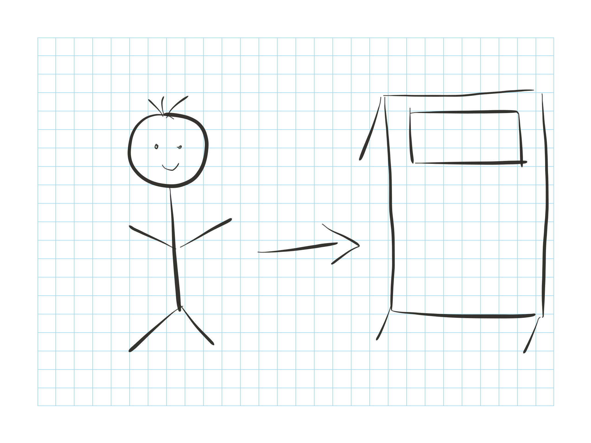
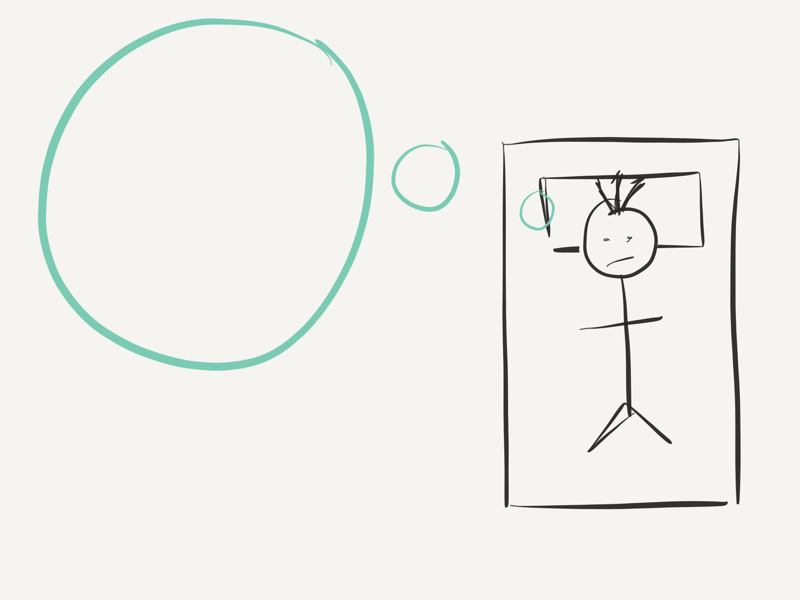
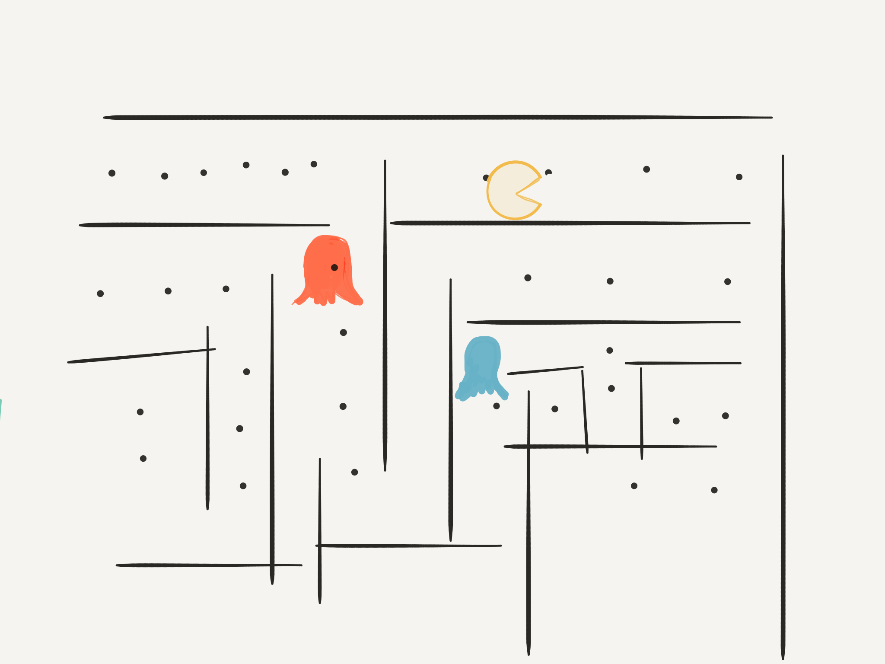
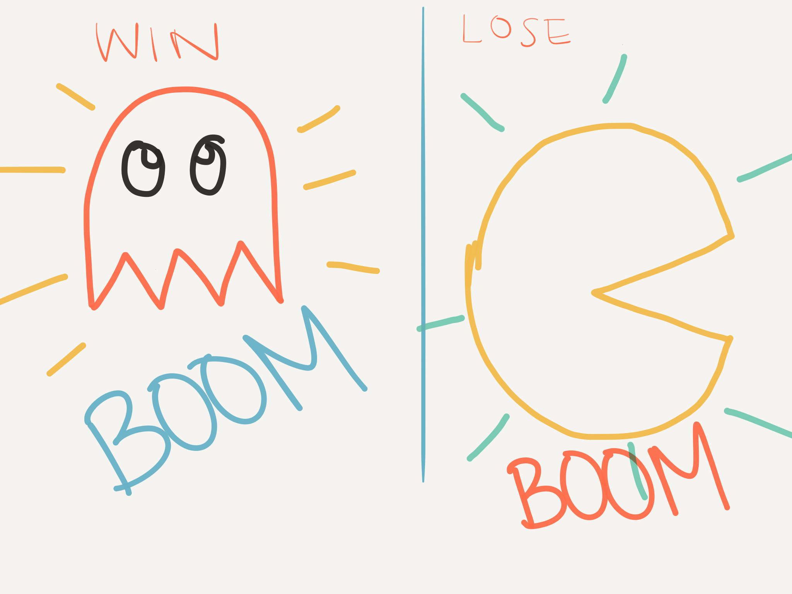
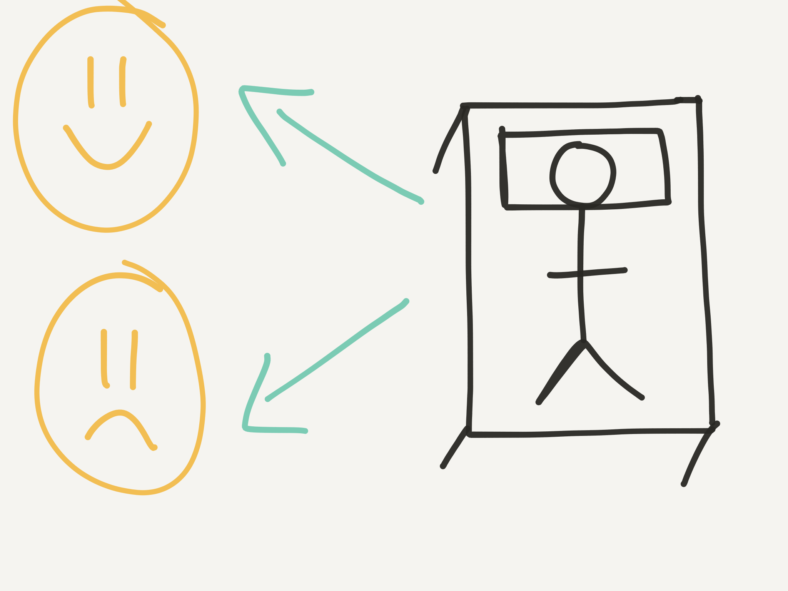
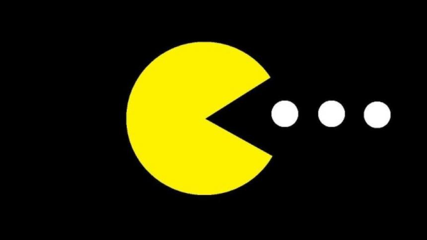
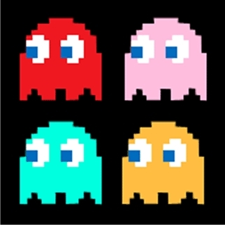

By Cole Bemus, Jessica Xu, Sveta Selvan, and Gabriel Medina-Kim.
Introduction:
Our final project is a brief interactive, contextualized re-creation of a classic video game, PAC-MAN. In the midst of a terrible nightmare, the player finds themselves in a maze being chased by ghosts! With no path out, the player's only possibility of escape is though collecting all of the white orbs. Will you escape the ghosts? Or will you be caught, becoming a victim of the ghosts?
| Scene 1 | Scene 2 | Scene 3 | Scene 4 | Scene 5 |
|---|---|---|---|---|
|  |  |  |  |  |
| Player walks to bed | Player lays in bed | Nightmare and game begins | On win/loss, explosions | Wakes up happy or sad |
| PAC-MAN and some dots | Original Ghosts Models | Walking (side view) |
|---|---|---|
|  |  | |
| Fairly simple shapes | Useful for sampling colors and modeling | For hierarchal animation |
[Put game here]